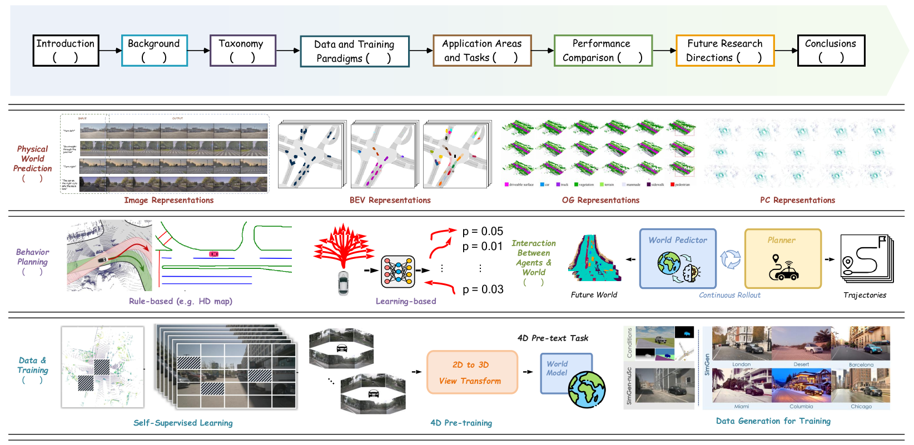

本リポジトリは、自動運転とロボティクスにおけるワールドモデルに関する研究論文をキュレーションしたAwesome Listである。包括的サーベイ論文（arXiv:2502.10498）を補完する形で、ワールドモデリング技術の最新動向を追っている。
スター2000以上、フォーク80、総コミット481件を誇り、自動運転・エンボディドAI分野のワールドモデル研究を対象としている。
このリポジトリを利用する場合は、以下のサーベイ論文の引用が求められている。
The Role of World Models in Shaping Autonomous Driving: A Comprehensive Survey
Tu et al., 2025（arXiv:2502.10498）
RAYNOVA、ResWorld、HERMES++を含む100本以上の論文が掲載されている。
約150本以上の論文を収録。主要な掲載論文は以下の通りである。
NeurIPS・ECCV・CVPR・ICLRなどの主要会議から多数の論文を収録。代表的な論文は以下の通りである。
ワールドモデル研究の基盤となる初期の論文群を収録している。
本リポジトリは、TeslaのAshok Elluswamy氏のキーノートや、Wayveによる自動運転向け生成AIに関する研究なども紹介している。
メンテナーはコミュニティからの積極的な参加を歓迎しており、見落とされた論文に対するPull RequestやIssueの提出を受け付けている。